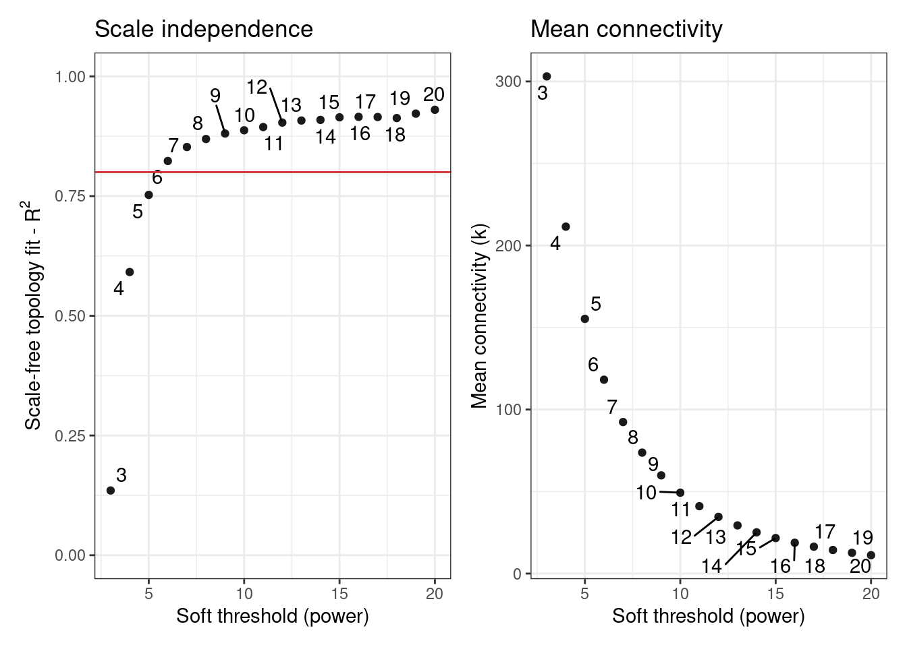

set.seed(123) # for reproducibility
# Load required packages
library(tidyverse)
library(BioNERO)
library(SummarizedExperiment)
library(here)1 Inference and analysis gene coexpression networks (GCNs)
In this lesson, you will learn how to infer and analyze gene coexpression networks (GCNs) from bulk RNA-seq data. At the end of this lesson, you will be able to:
- preprocess your quantitative data for GCN inference
- infer a GCN that is best suitable for your project goals
- identify genes with increased/decreased expression profiles in conditions of interest
- perform a functional profiling of interesting coexpression modules
- explore and visualize subgraphs
Let’s start by loading the packages we will use.
1.1 Getting to know the example data
Here, we will use an example data set available in data/se_PRJNA800609.rda in the Github repo associated with this course. This experiment comprises soybean (Glycine max) pods infected with the pathogenic fungus Colletotrichum truncatum, and data were downloaded from The Soybean Expression Atlas v2 (Almeida-Silva, Pedrosa-Silva, and Venancio 2023) using the BioProject accession PRJNA800609. The original data were generated by Zhu et al. (2022).
# Load expression data
load(here("data", "se_PRJNA800609.rda"))
# Rename object to a simpler name
exp <- se_PRJNA800609
rm(se_PRJNA800609)
# Take a look at the object
expclass: SummarizedExperiment
dim: 31422 60
metadata(0):
assays(1): ''
rownames(31422): Glyma.15G153300 Glyma.15G153400 ... Glyma.09G145600
Glyma.09G145700
rowData names(0):
colnames(60): SAMN25263487 SAMN25263488 ... SAMN25263525 SAMN25263526
colData names(4): Part Cultivar Treatment TimepointAs you can see, the expression data are stored in a SummarizedExperiment object, which is a standard data class in Bioconductor to represent quantitative data. The advantage of SummarizedExperiment objects over simple matrices or data frames is that they can store in a single object:
- The matrix (or matrices) with quantitative data, with features (e.g., genes, transcripts, etc.) in rows and samples in columns - accessed with
assays(). - Sample metadata (e.g., treatments, tissues, etc.) - accessed with
colData(). - Gene metadata (e.g., functional annotation) - accessed with
rowData(). - Experiment metadata, with details on study design - accessed with
metadata().

Now, let’s take a look at the data.
# Access the expression matrix
head(assay(exp)) SAMN25263487 SAMN25263488 SAMN25263507 SAMN25263508
Glyma.15G153300 1.318818 1.456713 3.273825 2.692176
Glyma.15G153400 1.228656 0.603925 0.740891 0.660024
Glyma.15G153500 2.576290 2.414041 3.132376 2.447442
Glyma.15G153600 3.158229 5.006052 5.774216 5.011995
Glyma.15G154000 48.588521 46.962343 44.002279 45.718349
Glyma.15G154100 5.691654 4.710240 6.759440 7.820475
SAMN25263527 SAMN25263528 SAMN25263489 SAMN25263529
Glyma.15G153300 1.011012 1.959141 1.546159 1.966017
Glyma.15G153400 1.158155 0.973421 1.216209 0.909978
Glyma.15G153500 2.792934 2.496442 2.652230 2.844740
Glyma.15G153600 5.932416 5.416826 5.009556 6.607424
Glyma.15G154000 48.140179 45.986216 46.807960 47.291290
Glyma.15G154100 5.563382 3.252028 3.853563 3.414671
SAMN25263509 SAMN25263490 SAMN25263510 SAMN25263530
Glyma.15G153300 2.437312 1.717373 1.249473 1.653988
Glyma.15G153400 0.758474 1.045148 1.082507 0.981065
Glyma.15G153500 2.283780 3.648908 2.551933 2.656303
Glyma.15G153600 5.293343 4.659172 4.788652 5.076116
Glyma.15G154000 44.150545 46.539558 46.545660 44.865952
Glyma.15G154100 7.098824 3.326728 5.027566 3.296681
SAMN25263511 SAMN25263491 SAMN25263531 SAMN25263492
Glyma.15G153300 1.072911 1.382002 2.112684 1.656414
Glyma.15G153400 1.077079 1.057292 1.765570 0.637662
Glyma.15G153500 2.942451 2.713147 2.758773 3.556068
Glyma.15G153600 5.096634 5.346749 7.161588 6.142572
Glyma.15G154000 47.183440 45.581715 45.680125 49.907787
Glyma.15G154100 5.240490 3.693226 6.612092 4.933826
SAMN25263512 SAMN25263493 SAMN25263532 SAMN25263494
Glyma.15G153300 2.119458 1.422595 3.354588 0.985514
Glyma.15G153400 0.813684 0.919768 1.143517 0.942899
Glyma.15G153500 2.441782 3.057790 3.282164 3.308678
Glyma.15G153600 4.855512 4.471064 7.049769 4.422022
Glyma.15G154000 44.139259 51.262008 47.348781 49.390113
Glyma.15G154100 5.966061 3.441541 7.288590 6.008751
SAMN25263513 SAMN25263495 SAMN25263533 SAMN25263496
Glyma.15G153300 1.677701 1.073936 2.867476 1.084827
Glyma.15G153400 1.452952 0.587908 1.555183 1.031356
Glyma.15G153500 3.490847 3.661505 3.186424 3.667392
Glyma.15G153600 4.999350 4.770911 8.006094 5.240810
Glyma.15G154000 47.355689 45.822253 47.268358 49.510195
Glyma.15G154100 3.664021 3.779945 8.693059 3.451897
SAMN25263497 SAMN25263514 SAMN25263534 SAMN25263480
Glyma.15G153300 0.864997 1.576210 2.722977 1.893100
Glyma.15G153400 0.789177 0.869626 1.406542 0.730242
Glyma.15G153500 2.978911 3.089149 3.161537 3.151448
Glyma.15G153600 4.856554 3.727502 5.142979 4.493014
Glyma.15G154000 47.646541 47.268310 48.597863 47.326101
Glyma.15G154100 3.269445 3.255262 3.221606 4.709318
SAMN25263515 SAMN25263535 SAMN25263516 SAMN25263498
Glyma.15G153300 2.249624 1.891046 1.738025 1.781456
Glyma.15G153400 0.824399 1.166962 0.965368 1.362375
Glyma.15G153500 2.810047 2.309977 2.575456 2.255615
Glyma.15G153600 4.637022 5.374759 4.972138 5.000512
Glyma.15G154000 48.396839 50.467574 44.571641 44.338362
Glyma.15G154100 2.804466 4.907848 9.371335 6.003852
SAMN25263536 SAMN25263481 SAMN25263499 SAMN25263500
Glyma.15G153300 2.372151 1.676888 2.305295 1.722230
Glyma.15G153400 0.718808 1.106588 1.590690 1.131578
Glyma.15G153500 2.549741 3.067112 3.246375 2.959195
Glyma.15G153600 5.138535 4.928480 5.817468 5.952875
Glyma.15G154000 47.252720 47.964646 48.367664 43.730578
Glyma.15G154100 3.680243 4.550954 5.706970 5.766535
SAMN25263482 SAMN25263517 SAMN25263537 SAMN25263501
Glyma.15G153300 2.297834 1.327987 4.169942 1.515246
Glyma.15G153400 1.133244 0.806522 1.441435 1.561416
Glyma.15G153500 3.439320 2.639980 3.677552 2.638224
Glyma.15G153600 4.086021 4.737207 7.752230 4.501115
Glyma.15G154000 46.520719 44.371125 46.025873 43.937082
Glyma.15G154100 3.966263 8.390515 11.923369 7.632822
SAMN25263518 SAMN25263483 SAMN25263502 SAMN25263484
Glyma.15G153300 1.575119 1.671752 2.133655 1.654191
Glyma.15G153400 0.993117 0.897881 1.274240 1.149185
Glyma.15G153500 2.918993 2.162582 2.381541 3.025843
Glyma.15G153600 5.048422 5.350417 6.929118 3.665560
Glyma.15G154000 47.241867 47.987449 42.221480 48.841677
Glyma.15G154100 8.396406 2.460024 8.368813 2.795243
SAMN25263538 SAMN25263503 SAMN25263519 SAMN25263539
Glyma.15G153300 3.817733 1.847031 1.753658 3.502759
Glyma.15G153400 1.740426 1.599077 1.279207 1.620121
Glyma.15G153500 3.857652 3.322580 3.205660 3.414521
Glyma.15G153600 7.136209 5.442902 4.257251 8.678930
Glyma.15G154000 47.408513 44.237572 46.574200 49.496960
Glyma.15G154100 9.716641 6.919685 5.026269 11.523564
SAMN25263485 SAMN25263504 SAMN25263505 SAMN25263486
Glyma.15G153300 1.151478 2.768050 2.314021 1.450419
Glyma.15G153400 0.779900 1.222210 1.206033 0.743528
Glyma.15G153500 2.737924 2.834736 2.583771 3.355698
Glyma.15G153600 4.359449 3.783583 4.989934 4.299697
Glyma.15G154000 46.157778 50.927584 53.706670 46.663664
Glyma.15G154100 2.096993 3.749880 3.716219 3.896027
SAMN25263520 SAMN25263521 SAMN25263506 SAMN25263522
Glyma.15G153300 1.188940 1.135556 2.484093 1.951762
Glyma.15G153400 0.709408 0.995971 0.599003 1.467000
Glyma.15G153500 2.695393 3.312026 2.531277 2.223493
Glyma.15G153600 5.380737 4.701845 5.064018 5.681533
Glyma.15G154000 45.579255 44.800435 50.729964 47.573451
Glyma.15G154100 4.774429 5.998384 5.261560 5.299969
SAMN25263523 SAMN25263524 SAMN25263525 SAMN25263526
Glyma.15G153300 1.021902 1.624240 1.833319 1.615635
Glyma.15G153400 1.308705 1.111181 1.261500 0.959593
Glyma.15G153500 3.202121 3.195753 3.306832 3.429444
Glyma.15G153600 5.285887 5.309246 6.134385 5.307514
Glyma.15G154000 49.749942 48.849039 45.078426 47.553132
Glyma.15G154100 6.103464 5.758107 5.965290 4.949206# Access sample metadata (i.e., colData)
colData(exp)DataFrame with 60 rows and 4 columns
Part Cultivar Treatment Timepoint
<character> <character> <character> <character>
SAMN25263487 pod ZC-2 control 8h
SAMN25263488 pod ZC-2 control 8h
SAMN25263507 pod ZC-2 infected 48h
SAMN25263508 pod ZC-2 infected 48h
SAMN25263527 pod Zhechun NO.3 infected 12h
... ... ... ... ...
SAMN25263522 pod Zhechun NO.3 control 12h
SAMN25263523 pod Zhechun NO.3 control 12h
SAMN25263524 pod Zhechun NO.3 control 12h
SAMN25263525 pod Zhechun NO.3 infected 12h
SAMN25263526 pod Zhechun NO.3 infected 12h
Practice
Explore the exp object to answer the questions below:
- How many levels are there for the
Treatmentvariable? - Subset the expression data to keep only treated samples and calculate the mean expression for each gene. What is the ID of the gene with the greatest mean expression in treated samples? Tip: use the
rowMeans()function to calculate means for all genes.
1.2 Data preprocessing
Before inferring a GCN, we have to filter and transform our expression data to maximize biological signal. The preprocessing functions implemented in BioNERO can help users:
- Handle missing values -
replace_na(); - Remove non-expressed/lowly expressed genes -
remove_nonexp(); - Remove genes with low variances in expression levels -
filter_by_variance(); - Filter outlying samples -
ZKfiltering(); - Apply a principal component-based correction for confounders -
PC_correction().
These preprocessing steps are optional, but strongly recommended. To execute them, you can either run one function after another (recommended if you want to use a few, but not all preprocessing steps), or use the wrapper function exp_preprocess(), as demonstrated below.
Step-by-step processing
This is how you can preprocess your expression data by piping one function after another using R’s native pipe operator (|>):
1final_exp1 <- exp |>
2 BioNERO::replace_na() |>
3 remove_nonexp(method = "median", min_exp = 5) |>
4 filter_by_variance(percentile = 0.2) |>
5 PC_correction()- 1
-
Take
exp, and then - 2
-
replace missing values (
NA) with 0, and then - 3
- remove genes with median expression <5, and then
- 4
- keep only the top 20% of the genes with highest variances, and then
- 5
- correct for confounders and apply quantile normalization.
One-step processing
To preprocess your expression data in a single function, use the function exp_preprocess().
final_exp2 <- exp_preprocess(
exp,
min_exp = 5,
variance_filter = TRUE,
percentile = 0.2,
Zk_filtering = FALSE
)Both examples above lead to the same results, so they are simply two different ways of executing the same task.
Practice
Compare the objects
final_exp1andfinal_exp2to verify that they are indeed the same.After correcting for confounders with
PC_correction(), the expression data are quantile-normalized so that the expression levels for all genes are normally distributed. Visualize the distribution of expression levels for a few genes to verify that.
Show me the solutions
# Q1
## Are dimensions (number of rows and columns) identical?
identical(dim(final_exp1), dim(final_exp2))[1] TRUE## Are the processed expression matrices identical?
identical(
assay(final_exp1)[1:5, 1:5],
assay(final_exp2)[1:5, 1:5]
)[1] TRUE# Q2
hist(assay(final_exp1)[1, ])
1.3 Exploratory data analyses
Once you have your processed expression data, you can check if they look as expected by visually exploring:
- heatmaps (gene expression or sample correlations) -
plot_heatmap(). - principal component analysis (PCA) -
plot_PCA()
First, let’s take a look at pairwise sample correlations.
# Plot pairwise sample correlations
p_heatmap <- plot_heatmap(
final_exp1,
type = "samplecor",
coldata_cols = "Treatment",
show_rownames = FALSE,
show_colnames = FALSE
)
p_heatmap
Now, let’s plot a principal component analysis of samples.
# Plot PCA
p_pca <- plot_PCA(
final_exp1,
metadata_cols = "Treatment",
)
p_pca
Practice
Recreate the heatmap of sample correlations, but now add individual legends for the variables
CultivarandTimepoint.Create a PCA plot showing the 1st and 3rd principal components.
1.4 Gene coexpression network inference
Before inferring the GCN, we must first select a value for the power \(\beta\) to which correlation coefficients will be raised. Raising correlations to a power \(\beta\) aims at amplifying their distances and, hence, making module detection more powerful. Greater values of \(\beta\) makes the network resemble more a scale-free network, but at the cost of reducing the mean connectivity. To solve this trade-off, we will use the function SFT_fit().
# Find optimal beta power to which correlation coefficients will be raised
sft <- SFT_fit(
final_exp1,
1 net_type = "signed hybrid",
2 cor_method = "pearson"
)
sft$power
sft$plot- 1
- Infer a signed hybrid network (negative correlations are represented as 0).
- 2
- Use Pearson’s correlation coefficient.

Power SFT.R.sq slope truncated.R.sq mean.k. median.k. max.k.
1 3 0.135 -0.196 0.941 303.0 292.00 691
2 4 0.591 -0.532 0.950 211.0 196.00 565
3 5 0.752 -0.731 0.970 155.0 137.00 477
4 6 0.823 -0.876 0.975 118.0 97.80 411
5 7 0.853 -0.990 0.975 92.4 71.70 360
6 8 0.869 -1.070 0.983 73.7 53.50 319
7 9 0.881 -1.140 0.982 59.9 40.50 286
8 10 0.887 -1.200 0.981 49.3 31.10 257
9 11 0.894 -1.250 0.983 41.1 24.00 233
10 12 0.904 -1.290 0.985 34.6 18.90 213
11 13 0.908 -1.320 0.986 29.3 15.00 195
12 14 0.909 -1.360 0.985 25.1 12.00 179
13 15 0.915 -1.390 0.987 21.6 9.60 165
14 16 0.915 -1.410 0.986 18.8 7.76 153
15 17 0.915 -1.430 0.983 16.4 6.33 142
16 18 0.913 -1.460 0.980 14.4 5.28 132
17 19 0.922 -1.480 0.985 12.6 4.35 123
18 20 0.930 -1.490 0.988 11.2 3.63 116
[1] 6Next, we can use the estimated \(\beta\) power to infer a GCN with exp2gcn().
# Infer a GCN
gcn <- exp2gcn(
final_exp1,
net_type = "signed hybrid",
SFTpower = sft$power,
cor_method = "pearson"
)..connectivity..
..matrix multiplication (system BLAS)..
..normalization..
..done.names(gcn)[1] "adjacency_matrix" "MEs" "genes_and_modules"
[4] "kIN" "correlation_matrix" "params"
[7] "dendro_plot_objects"The output of the exp2gcn() function is a list with the following elements:
adjacency_matrix: a square matrix \(m_{ij}\) representing representing the strength of the connection between gene i and gene j.correlation_matrix: very similar toadjacency_matrix, but values inside the matrix represent correlation coefficients.genes_and_modules(): a 2-column data frame of genes and their corresponding modules.MEs: a data frame with module eigengenes (i.e., a summary of each module’s expression profiles).kIN: a data frame with each gene’s degrees (i.e., sum of connection weights), both with genes inside the same module and in different modules.params: list of parameters used for network inference.dendro_plot_objects: list of objects used to plot a dendrogram of genes and modules withplot_dendro_and_colors().
Practice
Explore the object gcn to answer the following questions:
- How many modules are there?
- What is the intramodular degree of the gene Glyma.15G171800?
- What is the correlation coefficient of the gene pair Glyma.15G158200-Glyma.15G158400?
- The grey module is not actually a real module; it contains genes that could not be assigned to any other module, so it’s basically a trash bin. How many genes are in this module?
1.5 Visual summary of the inferred coexpression modules
First, you’d want to visualize the number of genes per module. This can be achieved with the function plot_ngenes_per_module().
plot_ngenes_per_module(gcn)Next, you can visualize a heatmap of pairwise correlations between module eigengenes with plot_eigengene_network().
plot_eigengene_network(gcn)1.6 Identifying module-trait associations
# Calculating module-trait correlations
me_trait <- module_trait_cor(
exp = final_exp1,
MEs = gcn$MEs,
metadata_cols = c("Treatment", "Cultivar", "Timepoint")
)
# Taking a look at the results
head(me_trait) ME trait cor pvalue group
1 MEbrown control -0.1077869 4.123628e-01 Treatment
2 MEbrown infected 0.1077869 4.123628e-01 Treatment
3 MEcyan control 0.5802954 1.175467e-06 Treatment
4 MEcyan infected -0.5802954 1.175467e-06 Treatment
5 MEdarkgreen control 0.5340069 1.112252e-05 Treatment
6 MEdarkgreen infected -0.5340069 1.112252e-05 TreatmentThe results of module_trait_cor() can be visualized with plot_module_trait_cor() as follows:
plot_module_trait_cor(me_trait)The plot shows that the module grey60 is positively correlated with the infected state, which means that genes in this module have increased expression levels in infected samples. We can take a closer look at this module’s expression profile using the function plot_expression_profile().
plot_expression_profile(
exp = final_exp1,
net = gcn,
modulename = "grey60",
metadata_cols = "Treatment"
)1.7 Functional analyses of coexpression modules
Once you have identified interesting modules, you’d typically want to explore the function of the genes therein. This can be done with the function module_enrichment(), which will perform an overrepresentation analysis for functional terms (e.g., pathways, Gene Ontology terms, etc).
For that, you need to pass a data frame with genes and their associated functional annotation as follows:
# Load annotation data - this is a list of data frames
load(here("data", "gma_annotation.rda"))
# Taking a look at the data
names(gma_annotation)[1] "MapMan" "InterPro"head(gma_annotation$MapMan) Gene MapMan
1 Glyma.01G000100 not assigned.not annotate
2 Glyma.01G000137 not assigned.not annotate
3 Glyma.01G000174 not assigned.annotated
4 Glyma.01G000211 not assigned.not annotate
5 Glyma.01G000248 not assigned.annotated
6 Glyma.01G000285 not assigned.not annotatehead(gma_annotation$InterPro) Gene
1 Glyma.01G000174
2 Glyma.01G000248
3 Glyma.01G000248
4 Glyma.01G000248
5 Glyma.01G000400
6 Glyma.01G000400
Interpro
1 Photosynthesis system II assembly factor Ycf48/Hcf136-like domain
2 Thiamine pyrophosphate enzyme, N-terminal TPP-binding domain
3 Thiamin diphosphate-binding fold
4 2-succinyl-5-enolpyruvyl-6-hydroxy-3-cyclohexene-1-carboxylic-acid synthase
5 FHY3/FAR1 family
6 Zinc finger, SWIM-typeThen, you can perform the enrichment analyses with:
sea_mapman <- module_enrichment(
net = gcn,
1 background_genes = rownames(final_exp1),
2 annotation = gma_annotation$MapMan
)- 1
- Using only genes in the network as background set (very important!)
- 2
- Perform enrichment for MapMan pathways
The output of module_enrichment() is a data frame with significant terms for each module (if any).
head(sea_mapman) term
98 Enzyme classification.EC_1 oxidoreductases.EC_1.13 oxidoreductase acting on single donor with incorporation of molecular oxygen (oxygenase)
249 Protein homeostasis.proteolysis.protease inhibitor activities.Kunitz protease inhibitor
60 Cell wall organisation.pectin.rhamnogalacturonan I.modification and degradation.beta-galactosidase (BGAL)
234 Protein homeostasis.autophagy.phagophore expansion.ATG8-phosphatidylethanolamine conjugation system.ubiquitin-fold protein (ATG8)
262 Protein homeostasis.ubiquitin-proteasome system.ubiquitin-fold protein conjugation.Cullin-based ubiquitylation complexes.SKP1-CUL1-FBX (SCF) E3 ubiquitin ligase complexes.F-BOX substrate adaptor activities.substrate adaptor (FBX)
42 Cell wall organisation.cutin and suberin.cuticular lipid formation.alkane-forming pathway.CER1-CER3 alkane-forming complex.electron supply module.electron shuttle hemoprotein (Cyt-b5)
genes all pval padj category module
98 6 7 6.593109e-12 3.454789e-09 MapMan cyan
249 3 8 5.826158e-05 1.526453e-02 MapMan cyan
60 6 6 1.256261e-05 3.466687e-03 MapMan darkgreen
234 7 8 1.323163e-05 3.466687e-03 MapMan darkgreen
262 8 13 1.811093e-04 3.163376e-02 MapMan darkgreen
42 6 6 2.341247e-04 4.089377e-02 MapMan floralwhite
Practice
- Inspect the enrichment results in
sea_mapmanand answer the following questions:
- How many modules had enriched terms?
- What proportion of the total number of modules does that represent?
- Rerun the enrichment analysis, but now using the annotation data frame in
gma_annotation$InterPro. Then, answer the questions below:
- How many modules had enriched terms?
- What proportion of the total number of modules does that represent?
- Were the number of modules with enriched terms different when using MapMan annotation and InterPro annotation? If so, why do you think that happened?
- (Optional, advanced) Choose one of the interesting modules you found in the previous section (on module-trait correlations) and look at the enrichment results for it. Based on the expression profiles and enrichment results, can you come out with a reasonable biological explanation for the observed expression patterns?
1.8 Identifying hub genes and visualizing networks
Hubs are the genes with the highest degree (i.e., sum of connection weights) in each module, and they are often considered to be the most important genes in a network. To identify hubs in a GCN, you can use the function get_hubs_gcn().
hubs <- get_hubs_gcn(exp = final_exp1, net = gcn)
head(hubs) Gene Module kWithin
1 Glyma.05G051300 brown 2.789611
2 Glyma.14G142300 brown 2.545291
3 Glyma.19G187400 brown 2.482610
4 Glyma.07G006900 cyan 11.718883
5 Glyma.15G026400 cyan 11.675715
6 Glyma.13G347700 cyan 11.271738Besides exploring the major genes in each module, you can use the output of get_hubs_gcn() for network visualization. For that, you will first need to extract a subgraph containing the genes you want to visualize (usually an entire module), which can be achieved with the function get_edge_list().
- 1
- Create a subgraph containing all genes in the royalblue module.
- 2
- Filter the graph to keep only connections greater than or equal to a given correlation coefficient (automatically estimated based on optimal scale-free topology fit).
Var1 Var2 Freq
175 Glyma.15G253700 Glyma.17G101700 0.8230963
233 Glyma.15G253700 Glyma.17G105600 0.8326334
295 Glyma.17G105600 Glyma.17G235300 0.8218305
407 Glyma.15G253700 Glyma.18G255300 0.8645490
411 Glyma.17G105600 Glyma.18G255300 0.8867203
412 Glyma.17G235300 Glyma.18G255300 0.8584245Next, you can use the function plot_gcn() to visualize these genes.
plot_gcn(
edgelist_gcn = edges,
net = gcn,
1 color_by = "module",
hubs = hubs
)- 1
- Nodes will be colored by their module (hence, in this case, they will have a single color).
Practice
Recreate the edge list for the royalblue module, but now use
method = 'min_cor'andrcutoff = 0.4. Then, plot the network. Does that change the network? If so, how?Visualize the network from the previous question in the interactive mode.
Session information
This chapter was created under the following conditions:
─ Session info ───────────────────────────────────────────────────────────────
setting value
version R version 4.3.0 (2023-04-21)
os Ubuntu 20.04.5 LTS
system x86_64, linux-gnu
ui X11
language (EN)
collate en_US.UTF-8
ctype en_US.UTF-8
tz Europe/Brussels
date 2023-09-09
pandoc 3.1.1 @ /usr/lib/rstudio/resources/app/bin/quarto/bin/tools/ (via rmarkdown)
─ Packages ───────────────────────────────────────────────────────────────────
package * version date (UTC) lib source
abind 1.4-5 2016-07-21 [1] CRAN (R 4.3.0)
annotate 1.78.0 2023-04-25 [1] Bioconductor
AnnotationDbi 1.62.0 2023-04-25 [1] Bioconductor
backports 1.4.1 2021-12-13 [1] CRAN (R 4.3.0)
base64enc 0.1-3 2015-07-28 [1] CRAN (R 4.3.0)
Biobase * 2.60.0 2023-04-25 [1] Bioconductor
BiocGenerics * 0.46.0 2023-04-25 [1] Bioconductor
BiocManager 1.30.21.1 2023-07-18 [1] CRAN (R 4.3.0)
BiocParallel 1.34.0 2023-04-25 [1] Bioconductor
BiocStyle 2.29.1 2023-08-04 [1] Github (Bioconductor/BiocStyle@7c0e093)
BioNERO * 1.9.7 2023-08-23 [1] Bioconductor
Biostrings 2.68.0 2023-04-25 [1] Bioconductor
bit 4.0.5 2022-11-15 [1] CRAN (R 4.3.0)
bit64 4.0.5 2020-08-30 [1] CRAN (R 4.3.0)
bitops 1.0-7 2021-04-24 [1] CRAN (R 4.3.0)
blob 1.2.4 2023-03-17 [1] CRAN (R 4.3.0)
cachem 1.0.8 2023-05-01 [1] CRAN (R 4.3.0)
Cairo 1.6-0 2022-07-05 [1] CRAN (R 4.3.0)
checkmate 2.2.0 2023-04-27 [1] CRAN (R 4.3.0)
circlize 0.4.15 2022-05-10 [1] CRAN (R 4.3.0)
cli 3.6.1 2023-03-23 [1] CRAN (R 4.3.0)
clue 0.3-64 2023-01-31 [1] CRAN (R 4.3.0)
cluster 2.1.4 2022-08-22 [4] CRAN (R 4.2.1)
coda 0.19-4 2020-09-30 [1] CRAN (R 4.3.0)
codetools 0.2-19 2023-02-01 [4] CRAN (R 4.2.2)
colorspace 2.1-0 2023-01-23 [1] CRAN (R 4.3.0)
ComplexHeatmap 2.16.0 2023-04-25 [1] Bioconductor
crayon 1.5.2 2022-09-29 [1] CRAN (R 4.3.0)
data.table 1.14.8 2023-02-17 [1] CRAN (R 4.3.0)
DBI 1.1.3 2022-06-18 [1] CRAN (R 4.3.0)
DelayedArray 0.26.1 2023-05-01 [1] Bioconductor
digest 0.6.33 2023-07-07 [1] CRAN (R 4.3.0)
doParallel 1.0.17 2022-02-07 [1] CRAN (R 4.3.0)
dplyr * 1.1.2 2023-04-20 [1] CRAN (R 4.3.0)
dynamicTreeCut 1.63-1 2016-03-11 [1] CRAN (R 4.3.0)
edgeR 3.42.0 2023-04-25 [1] Bioconductor
evaluate 0.21 2023-05-05 [1] CRAN (R 4.3.0)
fansi 1.0.4 2023-01-22 [1] CRAN (R 4.3.0)
farver 2.1.1 2022-07-06 [1] CRAN (R 4.3.0)
fastcluster 1.2.3 2021-05-24 [1] CRAN (R 4.3.0)
fastmap 1.1.1 2023-02-24 [1] CRAN (R 4.3.0)
forcats * 1.0.0 2023-01-29 [1] CRAN (R 4.3.0)
foreach 1.5.2 2022-02-02 [1] CRAN (R 4.3.0)
foreign 0.8-82 2022-01-13 [4] CRAN (R 4.1.2)
Formula 1.2-5 2023-02-24 [1] CRAN (R 4.3.0)
genefilter 1.82.0 2023-04-25 [1] Bioconductor
generics 0.1.3 2022-07-05 [1] CRAN (R 4.3.0)
GENIE3 1.22.0 2023-04-25 [1] Bioconductor
GenomeInfoDb * 1.36.0 2023-04-25 [1] Bioconductor
GenomeInfoDbData 1.2.10 2023-04-28 [1] Bioconductor
GenomicRanges * 1.52.0 2023-04-25 [1] Bioconductor
GetoptLong 1.0.5 2020-12-15 [1] CRAN (R 4.3.0)
ggdendro 0.1.23 2022-02-16 [1] CRAN (R 4.3.0)
ggnetwork 0.5.12 2023-03-06 [1] CRAN (R 4.3.0)
ggplot2 * 3.4.1 2023-02-10 [1] CRAN (R 4.3.0)
ggrepel 0.9.3 2023-02-03 [1] CRAN (R 4.3.0)
GlobalOptions 0.1.2 2020-06-10 [1] CRAN (R 4.3.0)
glue 1.6.2 2022-02-24 [1] CRAN (R 4.3.0)
GO.db 3.17.0 2023-05-02 [1] Bioconductor
gridExtra 2.3 2017-09-09 [1] CRAN (R 4.3.0)
gtable 0.3.3 2023-03-21 [1] CRAN (R 4.3.0)
here * 1.0.1 2020-12-13 [1] CRAN (R 4.3.0)
Hmisc 5.0-1 2023-03-08 [1] CRAN (R 4.3.0)
hms 1.1.3 2023-03-21 [1] CRAN (R 4.3.0)
htmlTable 2.4.1 2022-07-07 [1] CRAN (R 4.3.0)
htmltools 0.5.5 2023-03-23 [1] CRAN (R 4.3.0)
htmlwidgets 1.6.2 2023-03-17 [1] CRAN (R 4.3.0)
httr 1.4.5 2023-02-24 [1] CRAN (R 4.3.0)
igraph 1.4.2 2023-04-07 [1] CRAN (R 4.3.0)
impute 1.74.0 2023-04-25 [1] Bioconductor
intergraph 2.0-2 2016-12-05 [1] CRAN (R 4.3.0)
IRanges * 2.34.0 2023-04-25 [1] Bioconductor
iterators 1.0.14 2022-02-05 [1] CRAN (R 4.3.0)
jsonlite 1.8.7 2023-06-29 [1] CRAN (R 4.3.0)
KEGGREST 1.40.0 2023-04-25 [1] Bioconductor
knitr 1.43 2023-05-25 [1] CRAN (R 4.3.0)
labeling 0.4.2 2020-10-20 [1] CRAN (R 4.3.0)
lattice 0.20-45 2021-09-22 [4] CRAN (R 4.2.0)
lifecycle 1.0.3 2022-10-07 [1] CRAN (R 4.3.0)
limma 3.56.0 2023-04-25 [1] Bioconductor
locfit 1.5-9.7 2023-01-02 [1] CRAN (R 4.3.0)
lubridate * 1.9.2 2023-02-10 [1] CRAN (R 4.3.0)
magick 2.7.4 2023-03-09 [1] CRAN (R 4.3.0)
magrittr 2.0.3 2022-03-30 [1] CRAN (R 4.3.0)
MASS 7.3-58.2 2023-01-23 [4] CRAN (R 4.2.2)
Matrix 1.5-1 2022-09-13 [4] CRAN (R 4.2.1)
MatrixGenerics * 1.12.2 2023-06-09 [1] Bioconductor
matrixStats * 1.0.0 2023-06-02 [1] CRAN (R 4.3.0)
memoise 2.0.1 2021-11-26 [1] CRAN (R 4.3.0)
mgcv 1.8-41 2022-10-21 [4] CRAN (R 4.2.1)
minet 3.58.0 2023-04-25 [1] Bioconductor
munsell 0.5.0 2018-06-12 [1] CRAN (R 4.3.0)
NetRep 1.2.6 2023-01-06 [1] CRAN (R 4.3.0)
network 1.18.1 2023-01-24 [1] CRAN (R 4.3.0)
nlme 3.1-162 2023-01-31 [4] CRAN (R 4.2.2)
nnet 7.3-18 2022-09-28 [4] CRAN (R 4.2.1)
patchwork 1.1.2 2022-08-19 [1] CRAN (R 4.3.0)
pillar 1.9.0 2023-03-22 [1] CRAN (R 4.3.0)
pkgconfig 2.0.3 2019-09-22 [1] CRAN (R 4.3.0)
plyr 1.8.8 2022-11-11 [1] CRAN (R 4.3.0)
png 0.1-8 2022-11-29 [1] CRAN (R 4.3.0)
preprocessCore 1.62.0 2023-04-25 [1] Bioconductor
purrr * 1.0.1 2023-01-10 [1] CRAN (R 4.3.0)
R6 2.5.1 2021-08-19 [1] CRAN (R 4.3.0)
RColorBrewer 1.1-3 2022-04-03 [1] CRAN (R 4.3.0)
Rcpp 1.0.10 2023-01-22 [1] CRAN (R 4.3.0)
RCurl 1.98-1.12 2023-03-27 [1] CRAN (R 4.3.0)
readr * 2.1.4 2023-02-10 [1] CRAN (R 4.3.0)
reshape2 1.4.4 2020-04-09 [1] CRAN (R 4.3.0)
RhpcBLASctl 0.23-42 2023-02-11 [1] CRAN (R 4.3.0)
rjson 0.2.21 2022-01-09 [1] CRAN (R 4.3.0)
rlang 1.1.1 2023-04-28 [1] CRAN (R 4.3.0)
rmarkdown 2.23 2023-07-01 [1] CRAN (R 4.3.0)
rpart 4.1.19 2022-10-21 [4] CRAN (R 4.2.1)
rprojroot 2.0.3 2022-04-02 [1] CRAN (R 4.3.0)
RSQLite 2.3.1 2023-04-03 [1] CRAN (R 4.3.0)
rstudioapi 0.14 2022-08-22 [1] CRAN (R 4.3.0)
S4Arrays 1.0.1 2023-05-01 [1] Bioconductor
S4Vectors * 0.38.0 2023-04-25 [1] Bioconductor
scales 1.2.1 2022-08-20 [1] CRAN (R 4.3.0)
sessioninfo 1.2.2 2021-12-06 [1] CRAN (R 4.3.0)
shape 1.4.6 2021-05-19 [1] CRAN (R 4.3.0)
statmod 1.5.0 2023-01-06 [1] CRAN (R 4.3.0)
statnet.common 4.8.0 2023-01-24 [1] CRAN (R 4.3.0)
stringi 1.7.12 2023-01-11 [1] CRAN (R 4.3.0)
stringr * 1.5.0 2022-12-02 [1] CRAN (R 4.3.0)
SummarizedExperiment * 1.30.1 2023-05-01 [1] Bioconductor
survival 3.5-3 2023-02-12 [4] CRAN (R 4.2.2)
sva 3.48.0 2023-04-25 [1] Bioconductor
tibble * 3.2.1 2023-03-20 [1] CRAN (R 4.3.0)
tidyr * 1.3.0 2023-01-24 [1] CRAN (R 4.3.0)
tidyselect 1.2.0 2022-10-10 [1] CRAN (R 4.3.0)
tidyverse * 2.0.0 2023-02-22 [1] CRAN (R 4.3.0)
timechange 0.2.0 2023-01-11 [1] CRAN (R 4.3.0)
tzdb 0.3.0 2022-03-28 [1] CRAN (R 4.3.0)
utf8 1.2.3 2023-01-31 [1] CRAN (R 4.3.0)
vctrs 0.6.3 2023-06-14 [1] CRAN (R 4.3.0)
WGCNA 1.72-1 2023-01-18 [1] CRAN (R 4.3.0)
withr 2.5.0 2022-03-03 [1] CRAN (R 4.3.0)
xfun 0.39 2023-04-20 [1] CRAN (R 4.3.0)
XML 3.99-0.14 2023-03-19 [1] CRAN (R 4.3.0)
xtable 1.8-4 2019-04-21 [1] CRAN (R 4.3.0)
XVector 0.40.0 2023-04-25 [1] Bioconductor
yaml 2.3.7 2023-01-23 [1] CRAN (R 4.3.0)
zlibbioc 1.46.0 2023-04-25 [1] Bioconductor
[1] /home/faalm/R/x86_64-pc-linux-gnu-library/4.3
[2] /usr/local/lib/R/site-library
[3] /usr/lib/R/site-library
[4] /usr/lib/R/library
──────────────────────────────────────────────────────────────────────────────References
Almeida-Silva, Fabricio, Francisnei Pedrosa-Silva, and Thiago M Venancio. 2023. “The Soybean Expression Atlas V2: A Comprehensive Database of over 5000 RNA-Seq Samples.” bioRxiv, 2023–04.
Zhu, Longming, Qinghua Yang, Xiaomin Yu, Xujun Fu, Hangxia Jin, and Fengjie Yuan. 2022. “Transcriptomic and Metabolomic Analyses Reveal a Potential Mechanism to Improve Soybean Resistance to Anthracnose.” Frontiers in Plant Science 13: 850829.